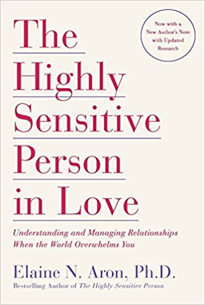

The Highly Sensitive Person in Love: Understanding and Managing Relationships When the World Overwhelms You
by Elaine N. Aron
I really liked the book. It was interesting to read about experiences of other highly sensitive people and to get a view from a psychologist on it. The book however has a way too touchy-feely style for me. And especially the final chapters talking about spirituality were a bit much for me. That being said I took a couple of things away from reading the book, I was more than once ready to throw the kindle across the room because my sensitivity got super hijacked by some things, and I’m definitely better informed and at peace with my sensitivity than I was before.
I had no idea about the concept of highly sensitive people until I read this article. It has a pretty click-baity headline but it really hit home for me. So I decided to learn more about it and this book was the most prominent resource to pop up in my search. It’s a really good book with a lot of great psychological insights and explicit case studies. At times the way high sensitivity was described was a bit too feel-good for my taste. At other times I would almost throw my kindle across the room as the author managed to really sneak up on and hijack my sensitivity. The book focuses a lot on what usually goes wrong during childhood for highly sensitive people and makes it a point to relive memories and traumas through the lense of high sensitivity. This is a practice I really enjoyed although it felt a bit much to me at times as I consider my childhood to have been a happy one. On the other hand I started to do this practice with every day situations at work to help me understand why I feel what I feel in different situations. I identify myself as a highly sensitive person and the book was an extremely good read to help me understand better what this could mean for me and my days.